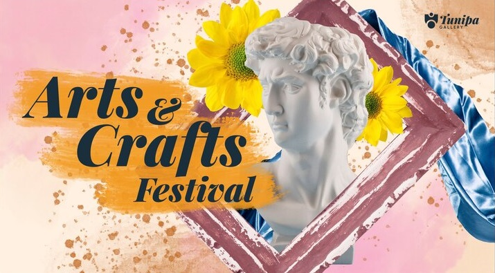
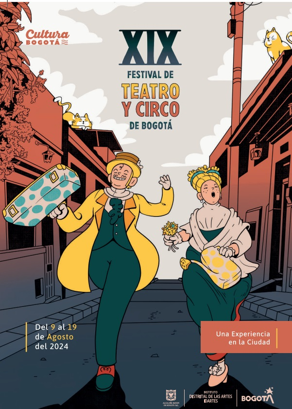

El evento escolar de arte es una celebración anual que reúne a estudiantes, docentes y familias en un espacio donde la creatividad y la expresión artística se convierten en los protagonistas. Este año, el evento destaca por su temática única, que invita a explorar diversas disciplinas como la pintura, la música, la danza y la escultura, fomentando la imaginación y el talento de nuestra comunidad estudiantil. A través de exposiciones, presentaciones y talleres interactivos, buscamos inspirar y valorar el arte como un medio esencial para el desarrollo integral y la conexión cultural entre todos los participantes. ¡Únete a esta maravillosa experiencia llena de color, música y emociones!

Creaciones artísticas realizadas sobre tela utilizando técnicas como óleo, acrílico o acuarela para expresar ideas y emociones.
Obras tridimensionales elaboradas con materiales como piedra, madera o metal, que exploran formas, volúmenes y texturas.
Producciones artísticas generadas mediante herramientas tecnológicas, combinando creatividad y software para crear imágenes, animaciones o gráficos innovadores.
La exposición de arte escolar era un hervidero de creatividad. Los pasillos se convertían en galerías improvisadas, donde colgaban cuadros de todos los tamaños y estilos. Esculturas coloridas y objetos artesanales decoraban las mesas. Los estudiantes, orgullosos de sus obras, explicaban con entusiasmo el proceso creativo detrás de cada pieza. Talleres de pintura, modelado y dibujo invitaban a los visitantes a unirse a la fiesta del arte, mientras que presentaciones musicales y teatrales amenizaban el ambiente. Era evidente la pasión y el talento de los jóvenes artistas.